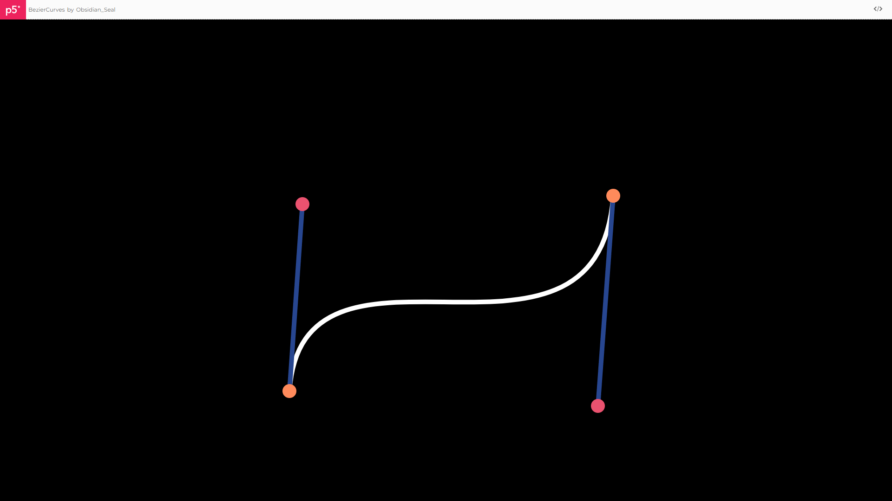

September 2nd, 2022 Previous / Next
BezierCurves
BezierCurves is a fun little program I made that lets you customize a...Bézier curve! I originally made it with Processing (click here for code), and I converted it to p5.js so I could embed it on my website.
INSTRUCTIONS FOR USE:
The BezierCurves page has been changed slightly, so these instructions may no longer be accurate. Check the Status page to see how things are going.
- Go to this link
Be on desktop (it doesn’t really work on mobile)EDIT: it kinda works on mobile (it just scrolls when you don’t want it to)- Ignore the p5.js header
Go fullscreen (f11 on Windows)EDIT: Press ‘f’Reload the page (ctrl+r or f5 on Windows)EDIT: pressing ‘f’ in the previous step does this automatically- Click somewhere
- Drag the circles to edit the curve
- Press space to hide the controls
- Press enter for a random curve